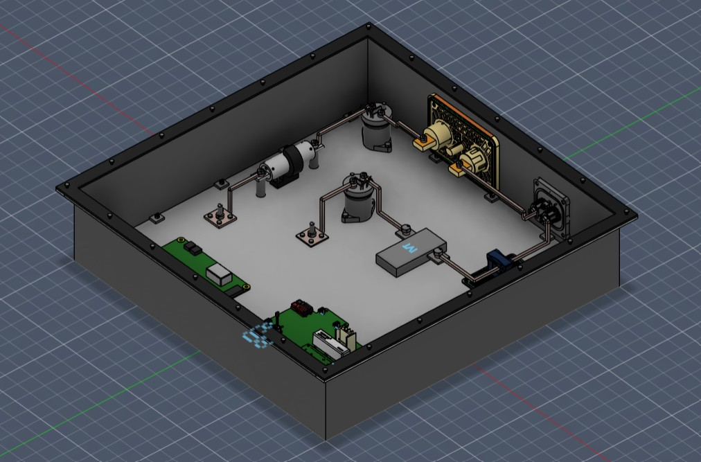
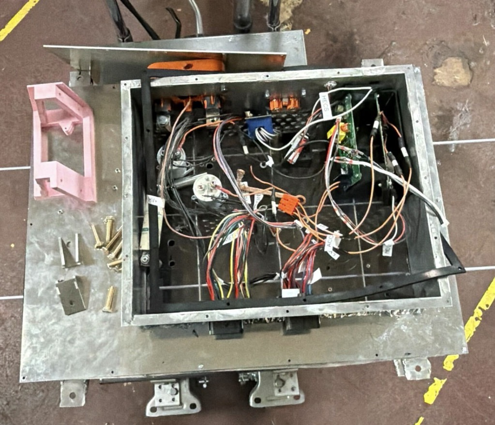
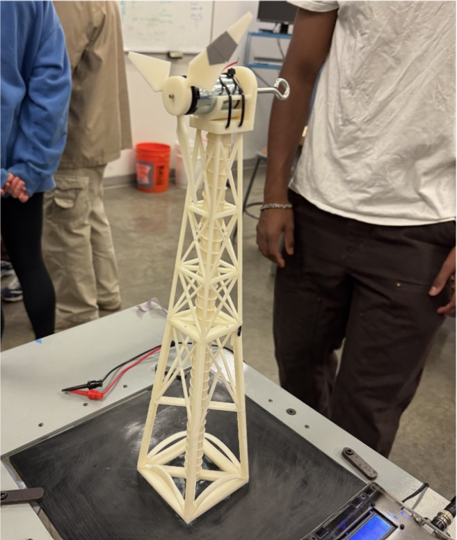
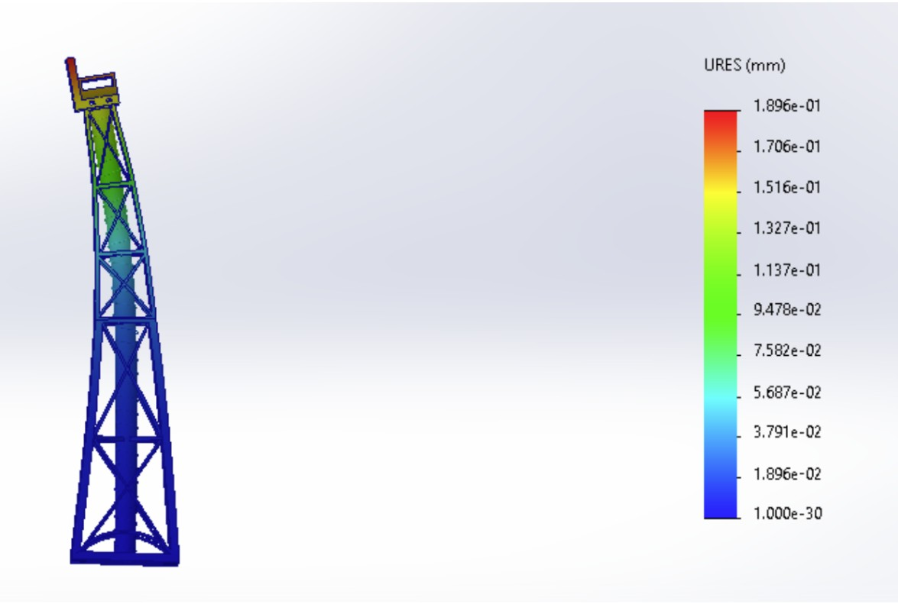
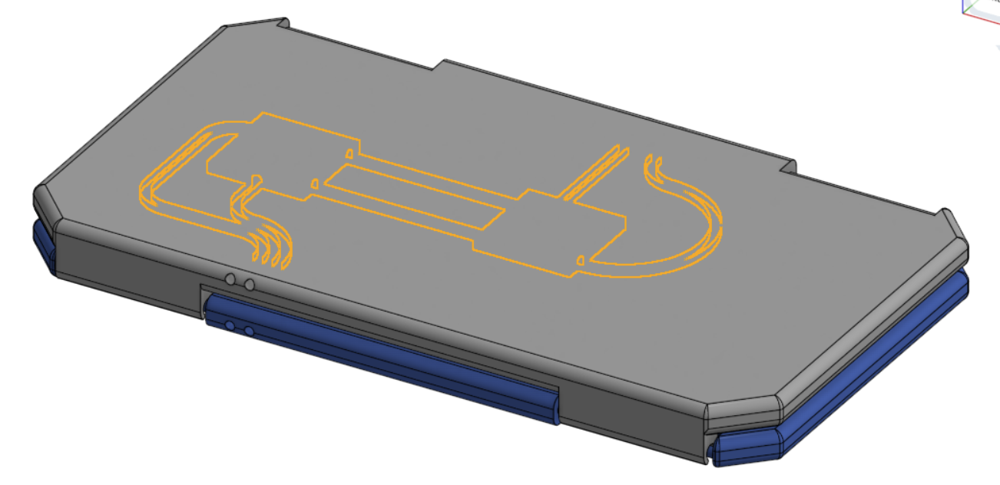
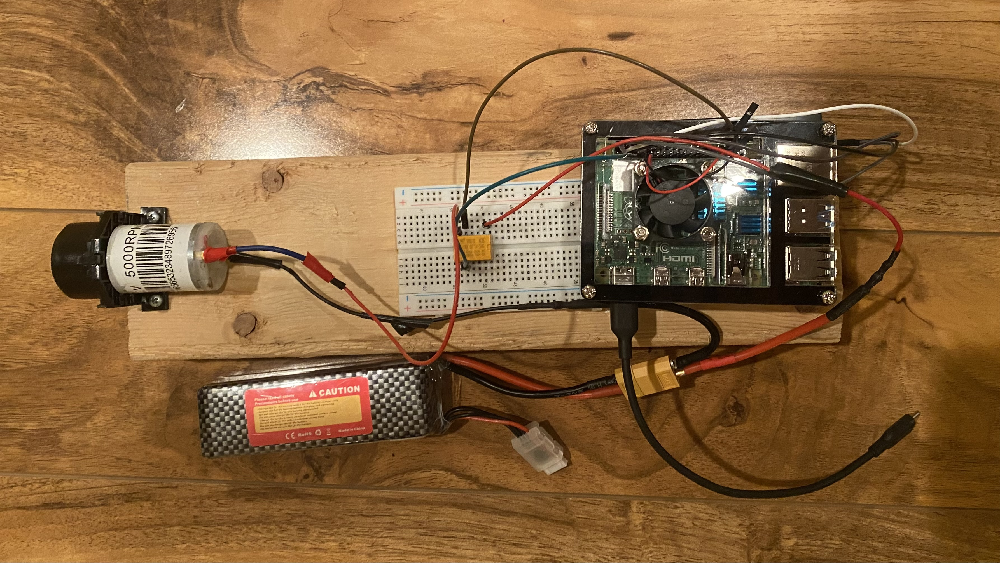
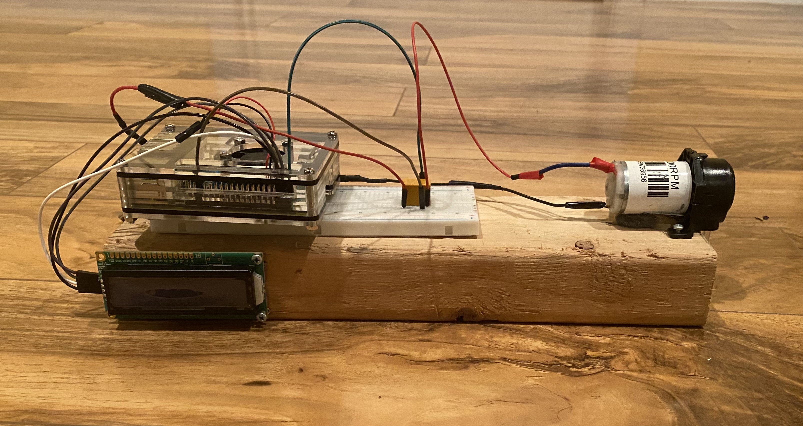
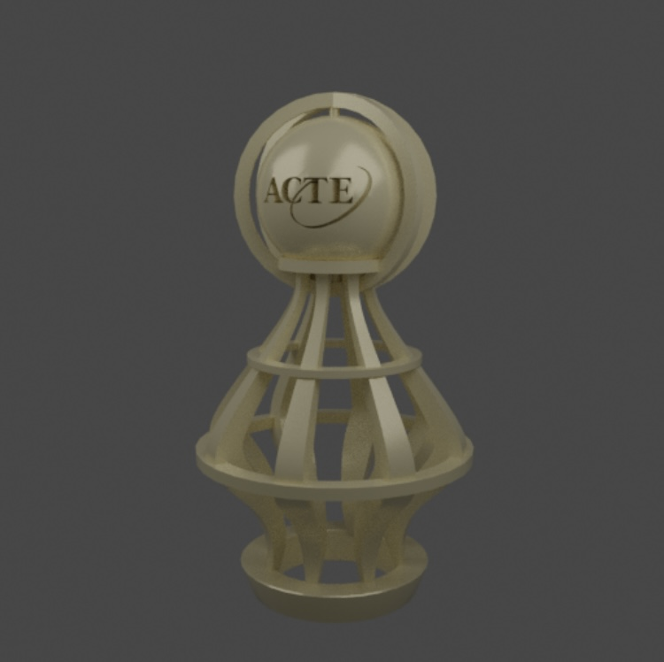

Projects
Formula SAE Accumulator Attic Electrical Architecture
January 2026 - Present


In this project, I designed the accumulator attic for a Formula SAE electric race car—the Accumulator Tractive System Container (ATSC), a high-voltage DC battery enclosure that houses the vehicle’s high-voltage (HV) and low-voltage (LV) power distribution components. I developed the enclosure and internal electrical architecture in SolidWorks using GD&T-driven tolerance stack-ups to integrate safety systems, sensing electronics, and high-current interfaces while accounting for packaging constraints and electrical isolation requirements. Using first-principles Joule heating and thermal conduction analysis, I redesigned the attic electrical component layout, cutting assembly mass by 18% while streamlining the high-voltage assembly workflow.
I fabricated custom copper busbars and sheet-metal mounting components using FabLight laser cutting and DIWIRE CNC wire bending to achieve precise conductor geometry and reliable electrical connections. While developing the layout, I evaluated current paths, electrical interfaces, and potential regions of increased resistive heating within the busbar network, supported by thermal calculations.
I developed the instrumentation system and test setup used to characterize busbar thermal behavior: an Arduino-based rig with a thermocouple sensor array and four-point probe resistance measurement, with telemetry logged and visualized in Python and matplotlib. By comparing the measured thermocouple and four-point probe results against SolidWorks thermal FEA, I validated the models and used the results to suggest new busbar design geometries, directly driving iterative redesigns that mitigate hotspots and improve the reliability of the accumulator power distribution system. Currently, the accumulator attic and its electrical hardware are being assembled.
Wind Turbine Design & Testing
March 2026 - May 2026


For this ENGIN 26 design project at UC Berkeley, my team designed, built, and tested a small-scale horizontal-axis wind turbine to generate electricity under laboratory conditions at a 25 mph wind speed. The rotor uses a three-blade design with a NACA 4412 airfoil profile—chosen for its high lift-to-drag ratio at low wind speeds—set to a 6° angle of attack with a blade twist from 20° at the root to 0° at the tip to keep the angle of attack favorable along the span.
The supporting tower was modeled in SolidWorks as a tapered square-truss lattice with diagonal cross-bracing to maximize stiffness-to-weight while lowering the center of gravity. I validated the structure with finite element analysis: under a 1.5 N horizontal wind load, the tower showed a maximum von Mises stress of 2.56 MPa, a minimum factor of safety of 4.6, and a peak tip displacement of just 0.19 mm. Sweeping the applied load from 0.5 N to 6 N produced a near-perfectly linear load–deflection response, and the final 3D-printed turbine came in at 215.5 g, well under the 300 g limit.
We tested the prototype two ways: a stiffness test using a pulley and incremental weights to measure tower deflection, and a power-generation test in front of a 25 mph wind source with the output wired to a DC electronic load and digital power meter. Sweeping the electrical load, we recorded voltage, current, power, and rotor speed across the operating range to locate the maximum power point. The turbine produced a peak of approximately 1.395 W at 595 mA and 1.93 V (~3684 rpm), corresponding to an aerodynamic efficiency of about 58.9%—close to the theoretical Betz limit of 59%.
Solar-Powered Portable Phone Charger
January 2025 - May 2025


This project involved the mechanical design and prototyping of a foldable, solar-powered portable phone charging system intended to maximize charging efficiency while maintaining portability.
The enclosure was fully modeled in CAD and fabricated using additive manufacturing, with a five-fold mechanical layout designed to optimize solar exposure while securely housing a mobile device. Finite element analysis (FEA) was conducted on the hinge mechanisms to evaluate stress distribution and ensure structural integrity under repeated folding cycles.
The system integrates ten miniature photovoltaic panels electrically configured in parallel to increase current output while maintaining a stable voltage. Each panel was rated for approximately 0.6 W at 2 V under direct sunlight, yielding a total theoretical output of up to 6 W. A voltage regulation module was incorporated to ensure consistent and safe power delivery despite fluctuations in solar input.
Raspberry Pi Sodium Bicarbonate Dispenser
February 2024 - April 2024


This project was inspired by my work at the Institute of Marine and Environmental Technology (IMET), where I helped deliver sodium bicarbonate to aquatic tanks to maintain stable pH. It grew into the design and implementation of an automated chemical dosing system intended to regulate and stabilize pH levels in aquatic tank environments.
A Raspberry Pi served as the central embedded controller, interfaced via a breadboard with discrete electrical components including a control switch, LED status indicators, and a DC pump powered by a 12 V battery supply.
Custom Python scripts were developed to manage system logic and control pump actuation, enabling consistent and repeatable sodium bicarbonate delivery, while LED indicators provided real-time visual feedback on system status to improve operational reliability. At the core of the software is a dosing calculator I helped develop from first-principles acid–base chemistry, which computes the required sodium bicarbonate dose from critical water parameters—current pH, target pH, tank volume, tank alkalinity, and temperature.
The completed system was pitched to IMET as a prototype to automate their pH stabilization process.
ACTE Trophy Design
November 2025 - December 2025


This award-winning project involved the end-to-end design of a national-level trophy using CAD and digital modeling workflows.
Onshape was utilized for parametric and structural modeling of the primary geometry, while Blender was employed to generate complex surface features, organic curves, and refined aesthetic elements.
The final design received the National ACTE Student Trophy Design Award, resulting in a $1,000 scholarship, the donation of a professional-grade 3D printer to the school, and an invitation to present the project at a national conference in Texas.